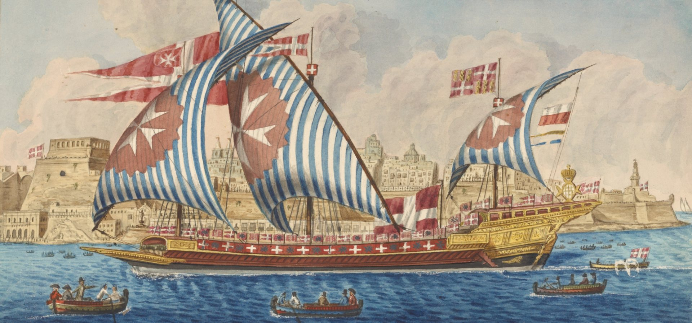

Order of Malta timeline

 Activity
Activity
Review the history of the Order of Malta by exploring the following timeline:
Origins and the Holy Land (1048-1291)
- c. 1048: Merchants from Amalfi obtain permission from the Caliph of Egypt to establish a hospital in Jerusalem for pilgrims.
- c. 1099: Blessed Gerard organises the hospital community into what becomes the Order of Saint John of Jerusalem.
- 15 February 1113: Pope Paschal II issues the bull Pie postulatio voluntatis, confirming the Order under papal authority and granting independence from local church control.
- 12th century: The Order takes on military functions, defending pilgrims and territories in the Kingdom of Jerusalem. The white eight-pointed cross becomes its emblem.
From Cyprus to Rhodes (1291-1522)
- 1291: Fall of Acre; the Order relocates to Cyprus.
- 1310: Under Grand Master Foulques de Villaret, the Knights take possession of Rhodes and establish sovereignty.
- 14th–15th centuries: The Order develops its naval power, organises into langues (tongues), and maintains international sovereignty.
- 1522–1523: After a long siege, Rhodes falls to Sultan Suleiman the Magnificent; the Knights withdraw.
Malta (1522-1798)
- 1530: Emperor Charles V grant Malta, Gozo, and Tripoli to the Order, approved by Pope Clement VII. Tribute: one falcon annually.
- 1565: The Great Siege of Malta – Grand Master Jean de Valette leads defence against the Ottomans.
- 1566: Foundation of Valletta, named for de Valette.
- 1571: The Order’s fleet joins the Holy League in the Battle of Lepanto.
- 17th century: Expansion of fortifications in Malta. Brief colonial possession of Caribbean islands (1651–1665).
- 18th century: Order declines with changing European politics and financial pressures.
Loss of Malta and Exile (1798-1834)
- 1798: Napoleon captures Malta during his Egyptian campaign. Grand Master Ferdinand von Hompesch surrenders.
- 1799–1801: Tsar Paul I of Russia shelters knights and is elected Grand Master (never confirmed canonically). A Russian Grand Priory is created.
- 1802: Treaty of Amiens stipulates Malta’s return to the Order, but it is not enforced.
- 1805–1879: Period of lieutenants governing without a Grand Master.
Rome and the Modern Order (1834-present)
- 1834: The Order establishes its headquarters in Rome (Palazzo Malta and Villa del Priorato di Malta), recognised with extraterritorial rights.
- 1879: Pope Leo XIII restores the office of Grand Master (Giovanni Battista Ceschi a Santa Croce).
- 20th century: The Order expands humanitarian missions, active in both World Wars.
- 1960s–1980s: Global medical, disaster relief, and social work expands under Grand Masters Fra’ Angelo de Mojana di Cologna and Fra’ Andrew Bertie.
- 1994: Order gains permanent observer status at the United Nations.
- 2000s: Malteser International becomes the worldwide relief agency of the Order.
- 2013: 900th anniversary of papal recognition celebrated in Rome with Pope Benedict XVI.
- 2016: Grand Master Fra’ Matthew Festing resigns on Pope Francis’s request.
- 2022: Pope Francis promulgates a new constitution, reshaping governance.
- 2023: Fra’ John T. Dunlap elected as 81st Prince and Grand Master.
Reflect
You have seen how the mission and identity of the Order of Malta has evolved from its origins in Jerusalem to its modern humanitarian role. What does this transformation reveal about the relationship between faith, service, and historical context? Record your observations in your Reflection Scroll.